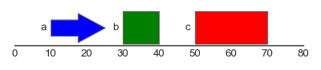
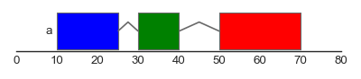
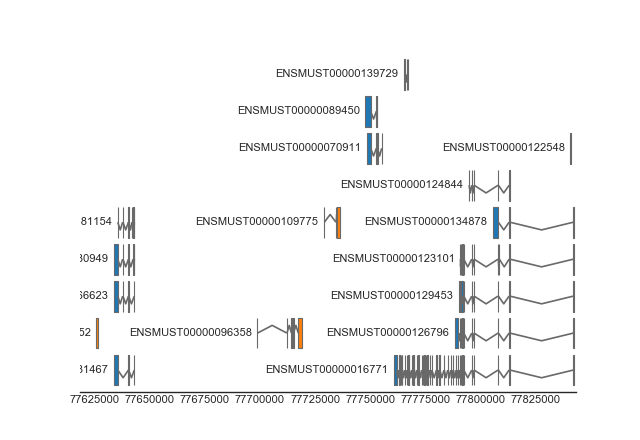
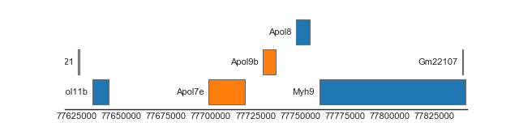

Usage¶
Drawing genomic features¶
# Example features.
features = pd.DataFrame.from_records([
('1', 10, 25, 1, 'a', 'a'),
('1', 30, 40, None, 'a', 'b'),
('1', 50, 70, None, 'a', 'c')
],
columns=['chromosome', 'start', 'end',
'strand', 'group', 'type'])
# Plot track.
feat_track = FeatureTrack(data=features, hue='type')
plot_tracks([feat_track], region=('1', 0, 80),
figsize=(5, None), despine=True)
(Source code, png, hires.png, pdf)
{kind=link}
{kind=link}

FeatureTrack(data=features, hue='type', label='type')
(Source code, png, hires.png, pdf)
{kind=link}
{kind=link}

FeatureTrack(data=features, hue='type', group='group', label='group')
(Source code, png, hires.png, pdf)
{kind=link}
{kind=link}
FeatureTrack(data=features, hue='type', group='group',
label='group', strand_junctions=True)
(Source code, png, hires.png, pdf)
{kind=link}
{kind=link}

Drawing genes/transcripts¶
from geneviz.tracks import BiomartTrack, plot_tracks
gene_track = BiomartTrack(
dataset='mmusculus_gene_ensembl',
hue='strand',
gene_id='gene_name',
transcript_id='transcript_id',
height=0.5,
spacing=0.1)
plot_tracks(
[gene_track],
region=('15', 77618614, 77843156),
despine=True,
figsize=(8, None))
(Source code, png, hires.png, pdf)
{kind=link}
{kind=link}

BiomartTrack(
dataset='mmusculus_gene_ensembl',
hue='strand',
gene_id='gene_name',
transcript_id='transcript_id',
height=0.5,
spacing=0.1,
collapse='transcript')
(Source code, png, hires.png, pdf)
{kind=link}
{kind=link}

BiomartTrack(
dataset='mmusculus_gene_ensembl',
hue='strand',
gene_id='gene_name',
transcript_id='transcript_id',
height=0.5,
spacing=0.1,
collapse='gene')
(Source code, png, hires.png, pdf)
{kind=link}
{kind=link}
